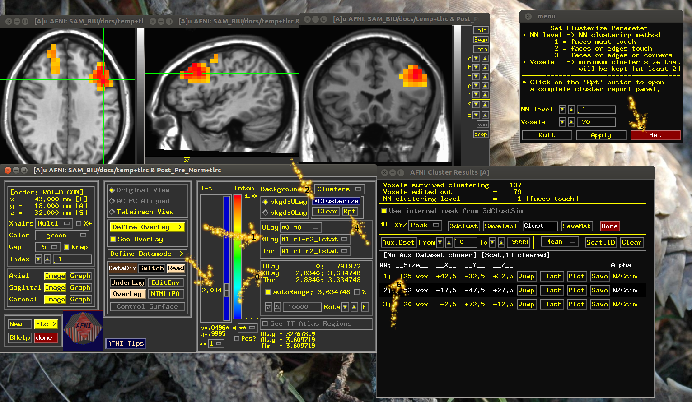

Random permutations for multiple comparisons
Here we perform dependent sample ttest for every voxel. we have two measurements per subject, one before and one after some task (alpha1 and alpha2. We run the ttest in the end but first we compote the ttest with random run order, so for subject 1 we take alpha1 - alpha2 and for subject 2 the other way around. then we see if we still have main effect, and what size of clusters we get if we mask with a fixed threshold. We run it n times and make a distribution of the maximum t value and maximum cluster size. In the end we see if the real ttest yielded an extreme t value anywhere or whether the clusters are extremely big.
Contents
Set N permutations and Threshold
n=100; tThresh=2.044;
Run the permutations
clustSize=zeros(n,2); if exist('tMinMax.txt','file') !rm tMinMax.txt end if exist('Post_Pre_Norm+tlrc.BRIK','file') !rm Post_Pre+tlrc* end if exist('neg+tlrc.BRIK','file') !rm neg+tlrc* !rm pos+tlrc* end !ls quad*01 -d > ls.txt LSA=importdata('ls.txt'); !rm ls for permi=1:n if exist('TTnew+tlrc.BRIK','file') !rm TTnew+tlrc* end rnd1=round(rand(1,length(LSA))+1); rnd2=rnd1*-1+3; setA='-setA r1 '; setB='-setB r2 '; for subi=1:length(LSA) setA=[setA,LSA{subi},'r1 ',LSA{subi},'/alpha',num2str(rnd1(subi)),'+tlrc ']; setB=[setB,LSA{subi},'r1 ',LSA{subi},'/alpha',num2str(rnd2(subi)),'+tlrc ']; end % next two lines run 3dttest++, one permutation command = ['~/abin/3dttest++ -paired -no1sam -mask ~/SAM_BIU/docs/MASKbrain+tlrc ',setA,setB]; [~, ~] = unix(command); % read min and max t value !~/abin/3dBrickStat -min -max TTnew+tlrc'[1]' >> tMinMax.txt % compute volume of largest positive and negative clusters eval(['!~/abin/3dcalc -a TTnew+tlrc''','[1]''',' -exp ''','ispositive(a-',num2str(tThresh),')*a''',' -prefix pos']) eval(['!~/abin/3dcalc -a TTnew+tlrc''','[1]''',' -exp ''','isnegative(a+',num2str(tThresh),')*a''',' -prefix neg']) eval(['!~/abin/3dclust -quiet -1clip ',num2str(tThresh),' 5 125 neg+tlrc > negClust.txt']) eval(['!~/abin/3dclust -quiet -1clip ',num2str(tThresh),' 5 125 pos+tlrc > posClust.txt']) negClust=importdata('negClust.txt'); posClust=importdata('posClust.txt'); if iscell(negClust) negClustSize=0; else negClustSize=negClust(1)/125; end if iscell(posClust) posClustSize=0; else posClustSize=posClust(1)/125; end clustSize(permi,1:2)=[negClustSize,posClustSize]; !rm neg+tlrc* !rm pos+tlrc* !rm *Clust.txt end clustSize=[clustSize(:,1);clustSize(:,2)]; clustSize=sort(clustSize,'descend'); % take the 5% greatest volumes (in voxels) as critical cluster size critClustSize=clustSize(ceil(0.05*n*2)); % take the 5% extreme (max and -1*min) t values as criticat t tList=importdata('tMinMax.txt'); tList=[-tList(:,1);tList(:,2)]; tList=sort(tList,'descend'); critT=tList(ceil(0.05*n*2)); !rm tMinMax.txt
rm: cannot remove `Post_Pre+tlrc*': No such file or directory rm: cannot remove `ls': No such file or directory ++ 3dcalc: AFNI version=AFNI_2011_12_21_1014 (Mar 1 2013) [64-bit] ++ Authored by: A cast of thousands ++ Output dataset ./pos+tlrc.BRIK ++ 3dcalc: AFNI version=AFNI_2011_12_21_1014 (Mar 1 2013) [64-bit] ++ Authored by: A cast of thousands ++ Output dataset ./neg+tlrc.BRIK . . . ++ Authored by: RW Cox et al ++ 3dclust: AFNI version=AFNI_2011_12_21_1014 (Mar 1 2013) [64-bit] ++ Authored by: RW Cox et al
Making the real ttest
rnd1=ones(1,length(LSA)); rnd2=rnd1+1; setA='-setA r1 '; setB='-setB r2 '; for subi=1:length(LSA) setA=[setA,LSA{subi},'r1 ',LSA{subi},'/alpha',num2str(rnd1(subi)),'+tlrc ']; setB=[setB,LSA{subi},'r1 ',LSA{subi},'/alpha',num2str(rnd2(subi)),'+tlrc ']; end % making the real ttest command = ['~/abin/3dttest++ -paired -no1sam -prefix Post_Pre -mask ~/SAM_BIU/docs/MASKbrain+tlrc ',setA,setB]; [~, ~] = unix(command); % now open AFNI and view Post_Pre+tlrc. % to see if you have sig voxels check the range of the overlay (see arrow0). Note, there % are two images there, means difference (brik[0]) and t values (brik[1]). % choose [1] in Define Overlay (Arrow1). % to see if you have large clusters set the threshold to tThresh (arrow with no number), click on % clusterize (arrow2), set (arrow3), Rpt (arrow4). Look at the list for % cluster size (arrow6). !~/abin/afni -dset ~/SAM_BIU/docs/temp+tlrc
Thanks go to PSF Bellgowan for "quick" questions Initializing: X11. ++++++++ IMAGE SAVE SETUP WARNINGS ++++++++ ++ Can't find program mpeg_encode for Save to MPEG-1 ++ Can't find program cjpeg for Save to JPEG ++ Can't find program gifsicle OR whirlgif for Save to Animated GIF ++ To disable these warnings, set environment ++ variable AFNI_IMSAVE_WARNINGS to 'NO'. +++++++++++++++++++++++++++++++++++++++++++ . Widgets. ++ WARNING: Can't find TTatlas+tlrc or TTatlas.nii.gz dataset for 'whereami'! ++--------- See http://afni.nimh.nih.gov/pub/dist/data/ ..... Input files: dataset count = 1 Time series = 0 files read Plugins = 0 libraries read ** Your Unix path must include the AFNI binary directory ** OR you must setenv AFNI_PLUGINPATH to that directory! ++ WARNING: ~/.afni.log is now 23,683,342 (24 million) bytes long! + (Is that you, Kevin?) ++ This version of AFNI was built Mar 1 2013 ++ ++ 'Define Markers' is hidden: right-click 'DataDir' to see it ** AFNI concludes: What a long strange trip it's been! 
randpermute.py: prepare a template text file for for ANOVA F test
If you don't have randpermute.py you can download it like this (linux terminal): cd abin; wget http://kurage.nimh.nih.gov/library/Meg/randpermute.py; cd; Here we run pots of ANOVAs with random assignments to conditions. First you have to make a template text file as in the example below:################### the content of template.sh file cmd: 3dANOVA -mask ~/SAM_BIU/docs/MASKbrain+tlrc -levels 2 $permute -ftr out output: out+tlrc permute: -dset $1 quad0501/alpha1+tlrc -dset $2 quad0501/alpha2+tlrc -dset $1 quad0601/alpha1+tlrc -dset $2 quad0601/alpha2+tlrc -dset $1 quad0701/alpha1+tlrc -dset $2 quad0701/alpha2+tlrc -dset $1 quad0901/alpha1+tlrc -dset $2 quad0901/alpha2+tlrc -dset $1 quad1001/alpha1+tlrc -dset $2 quad1001/alpha2+tlrc -dset $1 quad1201/alpha1+tlrc -dset $2 quad1201/alpha2+tlrc -dset $1 quad1401/alpha1+tlrc -dset $2 quad1401/alpha2+tlrc -dset $1 quad1501/alpha1+tlrc -dset $2 quad1501/alpha2+tlrc -dset $1 quad1601/alpha1+tlrc -dset $2 quad1601/alpha2+tlrc -dset $1 quad1801/alpha1+tlrc -dset $2 quad1801/alpha2+tlrc -dset $1 quad2001/alpha1+tlrc -dset $2 quad2001/alpha2+tlrc -dset $1 quad2501/alpha1+tlrc -dset $2 quad2501/alpha2+tlrc -dset $1 quad2601/alpha1+tlrc -dset $2 quad2601/alpha2+tlrc -dset $1 quad2701/alpha1+tlrc -dset $2 quad2701/alpha2+tlrc -dset $1 quad2901/alpha1+tlrc -dset $2 quad2901/alpha2+tlrc -dset $1 quad3001/alpha1+tlrc -dset $2 quad3001/alpha2+tlrc -dset $1 quad3101/alpha1+tlrc -dset $2 quad3101/alpha2+tlrc -dset $1 quad3601/alpha1+tlrc -dset $2 quad3601/alpha2+tlrc -dset $1 quad3801/alpha1+tlrc -dset $2 quad3801/alpha2+tlrc -dset $1 quad4001/alpha1+tlrc -dset $2 quad4001/alpha2+tlrc -dset $1 quad4101/alpha1+tlrc -dset $2 quad4101/alpha2+tlrc -dset $1 quad4201/alpha1+tlrc -dset $2 quad4201/alpha2+tlrc values: 1 2 ###################
Running randpermute.py with a shell script
You run the following lines in bash terminal (no matlab here). Best to arrange the below lines in a script, say permute.sh. Execute it from the terminal by ./permute.sh . Dont forget to change permissions of .sh files to be executable.# run n permutations, save output in a text file called permFval randpermute.py -n 1001 -v template.sh > permFval # get just the F values, write them to Fval file, sorted grep '###' permFval | cut -f15- -d' ' | sort -g -r > Fval # get the line with the 5% greatest F old_IFS=$IFS IFS=$'\n' lines=($(cat Fval)) # array IFS=$old_IFS rowNum=($(awk 'END { print int(NR/20) }' Fval)) # clean directory rm permFval rm *corr* rm Post_Pre_F+tlrc* # run the real F test, call it Post_Pre_F 3dANOVA -mask /home/yuval/SAM_BIU/docs/MASKbrain+tlrc -levels 2 \ -dset 1 quad0501/alpha1+tlrc -dset 2 quad0501/alpha2+tlrc \ -dset 1 quad0601/alpha1+tlrc -dset 2 quad0601/alpha2+tlrc \ -dset 1 quad0701/alpha1+tlrc -dset 2 quad0701/alpha2+tlrc \ -dset 1 quad0901/alpha1+tlrc -dset 2 quad0901/alpha2+tlrc \ -dset 1 quad1001/alpha1+tlrc -dset 2 quad1001/alpha2+tlrc \ -dset 1 quad1201/alpha1+tlrc -dset 2 quad1201/alpha2+tlrc \ -dset 1 quad1401/alpha1+tlrc -dset 2 quad1401/alpha2+tlrc \ -dset 1 quad1501/alpha1+tlrc -dset 2 quad1501/alpha2+tlrc \ -dset 1 quad1601/alpha1+tlrc -dset 2 quad1601/alpha2+tlrc \ -dset 1 quad1801/alpha1+tlrc -dset 2 quad1801/alpha2+tlrc \ -dset 1 quad2001/alpha1+tlrc -dset 2 quad2001/alpha2+tlrc \ -dset 1 quad2501/alpha1+tlrc -dset 2 quad2501/alpha2+tlrc \ -dset 1 quad2601/alpha1+tlrc -dset 2 quad2601/alpha2+tlrc \ -dset 1 quad2701/alpha1+tlrc -dset 2 quad2701/alpha2+tlrc \ -dset 1 quad2901/alpha1+tlrc -dset 2 quad2901/alpha2+tlrc \ -dset 1 quad3001/alpha1+tlrc -dset 2 quad3001/alpha2+tlrc \ -dset 1 quad3101/alpha1+tlrc -dset 2 quad3101/alpha2+tlrc \ -dset 1 quad3601/alpha1+tlrc -dset 2 quad3601/alpha2+tlrc \ -dset 1 quad3801/alpha1+tlrc -dset 2 quad3801/alpha2+tlrc \ -dset 1 quad4001/alpha1+tlrc -dset 2 quad4001/alpha2+tlrc \ -dset 1 quad4101/alpha1+tlrc -dset 2 quad4101/alpha2+tlrc \ -dset 1 quad4201/alpha1+tlrc -dset 2 quad4201/alpha2+tlrc -ftr Post_Pre_F # display result echo echo echo "########## CRITICAL F ##########" echo " F = "${lines[$rowNum]}
++ 3dANOVA: AFNI version=AFNI_2011_12_21_1014 (Mar 1 2013) [64-bit]
++ Authored by: B. Douglas Ward
++ Mask from dataset '~/SAM_BIU/docs/MASKbrain+tlrc' has 11541 voxels
** Changes have been made for 3dANOVA computations.
For details, please see:
http://afni.nimh.nih.gov/sscc/gangc/ANOVA_Mod.html
*+ WARNING: +++++++++++++++++++++++++++++++++++++++++++++++++++++++++++
*+ WARNING: out[1] scale to shorts mean misfit error = 12.1% -- ** Take Care
+ a) Numerical precision has been lost when truncating results
from 32-bit floating point to 16-bit integers (shorts).
+ b) Consider writing datasets out in float format.
In most AFNI programs, use the '-float' option.
+ c) This warning is a new message, but is an old issue
that arises when storing results in an integer format.
+ d) Don't panic! These messages likely originate in peripheral
or unimportant voxels. They mean that you must examine your output.
"Assess the situation and keep a calm head about you,
because it doesn't do anybody any good to panic."
++ ++++++++++++++++++++++++++++++++++++++++++++++++++++++++++++++++++++
++ Writing combined dataset into ./out+tlrc.HEAD
+ created 1 FDR curves in header
randpermute.py: #^^^^^^^^^#
randpermute.py: 3dANOVA -mask ~/SAM_BIU/docs/MASKbrain+tlrc -levels 2 -dset 2 quad0501/alpha1+tlrc -dset 1 quad0501/alpha2+tlrc -dset 1 quad0601/alpha1+tlrc -dset 2 quad0601/alpha2+tlrc -dset 1 quad0701/alpha1+tlrc -dset 2 quad0701/alpha2+tlrc -dset 2 quad0901/alpha1+tlrc -dset 1 quad0901/alpha2+tlrc -dset 1 quad1001/alpha1+tlrc -dset 2 quad1001/alpha2+tlrc -dset 1 quad1201/alpha1+tlrc -dset 2 quad1201/alpha2+tlrc -dset 2 quad1401/alpha1+tlrc -dset 1 quad1401/alpha2+tlrc -dset 2 quad1501/alpha1+tlrc -dset 1 quad1501/alpha2+tlrc -dset 1 quad1601/alpha1+tlrc -dset 2 quad1601/alpha2+tlrc -dset 1 quad1801/alpha1+tlrc -dset 2 quad1801/alpha2+tlrc -dset 2 quad2001/alpha1+tlrc -dset 1 quad2001/alpha2+tlrc -dset 2 quad2501/alpha1+tlrc -dset 1 quad2501/alpha2+tlrc -dset 2 quad2601/alpha1+tlrc -dset 1 quad2601/alpha2+tlrc -dset 2 quad2701/alpha1+tlrc -dset 1 quad2701/alpha2+tlrc -dset 2 quad2901/alpha1+tlrc -dset 1 quad2901/alpha2+tlrc -dset 1 quad3001/alpha1+tlrc -dset 2 quad3001/alpha2+tlrc -dset 1 quad3101/alpha1+tlrc -dset 2 quad3101/alpha2+tlrc -dset 2 quad3601/alpha1+tlrc -dset 1 quad3601/alpha2+tlrc -dset 2 quad3801/alpha1+tlrc -dset 1 quad3801/alpha2+tlrc -dset 1 quad4001/alpha1+tlrc -dset 2 quad4001/alpha2+tlrc -dset 2 quad4101/alpha1+tlrc -dset 1 quad4101/alpha2+tlrc -dset 2 quad4201/alpha1+tlrc -dset 1 quad4201/alpha2+tlrc -ftr out
randpermute.py: #^^^^^^^^^#
randpermute.py: Running 1001 permutations (max 4194304).
Maximum significance level will be p < 0.5
1++ 3dANOVA: AFNI version=AFNI_2011_12_21_1014 (Mar 1 2013) [64-bit]
++ Authored by: B. Douglas Ward
++ Mask from dataset '/home/yuval/SAM_BIU/docs/MASKbrain+tlrc' has 11541 voxels
** Changes have been made for 3dANOVA computations.
For details, please see:
http://afni.nimh.nih.gov/sscc/gangc/ANOVA_Mod.html
*+ WARNING: +++++++++++++++++++++++++++++++++++++++++++++++++++++++++++
*+ WARNING: out[1] scale to shorts mean misfit error = 11.4% -- ** Take Care
+ a) Numerical precision has been lost when truncating results
from 32-bit floating point to 16-bit integers (shorts).
+ b) Consider writing datasets out in float format.
In most AFNI programs, use the '-float' option.
+ c) This warning is a new message, but is an old issue
that arises when storing results in an integer format.
+ d) Don't panic! These messages likely originate in peripheral
or unimportant voxels. They mean that you must examine your output.
"Assess the situation and keep a calm head about you,
because it doesn't do anybody any good to panic."
++ ++++++++++++++++++++++++++++++++++++++++++++++++++++++++++++++++++++
++ Writing combined dataset into ./out+tlrc.HEAD
+ created 1 FDR curves in header
++ 3dcalc: AFNI version=AFNI_2011_12_21_1014 (Mar 1 2013) [64-bit]
++ Authored by: A cast of thousands
++ Output dataset ./tmp+tlrc.BRIK
++ 3dbucket: AFNI version=AFNI_2011_12_21_1014 (Mar 1 2013) [64-bit]
++ 3dANOVA: AFNI version=AFNI_2011_12_21_1014 (Mar 1 2013) [64-bit]
++ Authored by: B. Douglas Ward
++ Mask from dataset '/home/yuval/SAM_BIU/docs/MASKbrain+tlrc' has 11541 voxels
Data set dimensions: nx = 32 ny = 38 nz = 30 nxyz = 36480
** Changes have been made for 3dANOVA computations.
For details, please see:
http://afni.nimh.nih.gov/sscc/gangc/ANOVA_Mod.html
*+ WARNING: +++++++++++++++++++++++++++++++++++++++++++++++++++++++++++
*+ WARNING: Post_Pre_F[1] scale to shorts mean misfit error = 12.1% -- ** Take Care
+ a) Numerical precision has been lost when truncating results
from 32-bit floating point to 16-bit integers (shorts).
+ b) Consider writing datasets out in float format.
In most AFNI programs, use the '-float' option.
+ c) This warning is a new message, but is an old issue
that arises when storing results in an integer format.
+ d) Don't panic! These messages likely originate in peripheral
or unimportant voxels. They mean that you must examine your output.
"Assess the situation and keep a calm head about you,
because it doesn't do anybody any good to panic."
++ ++++++++++++++++++++++++++++++++++++++++++++++++++++++++++++++++++++
++ Writing combined dataset into ./Post_Pre_F+tlrc.HEAD
+ created 1 FDR curves in header
########## CRITICAL F ##########
F = 8.34